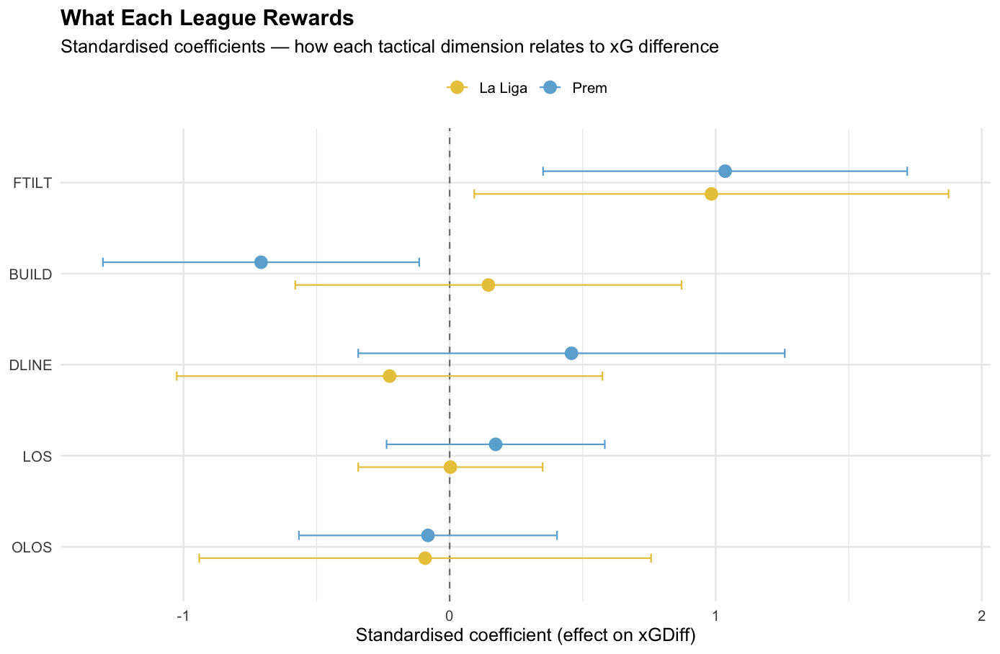
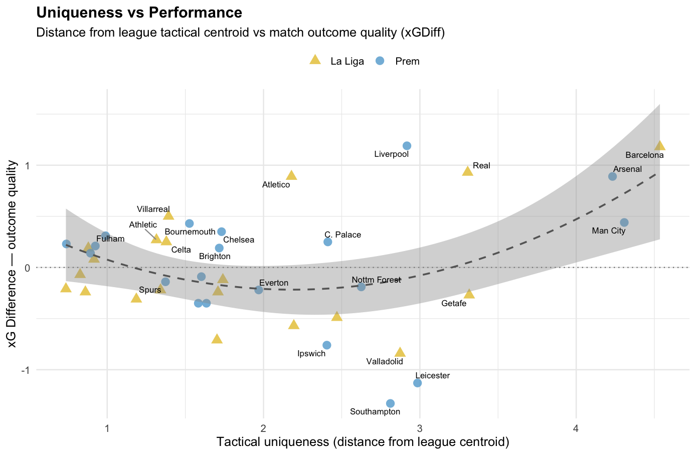

The Premier League is the most watched football league in the world. It is also, increasingly, one of the hardest to enjoy. The football has become optimised. Set pieces, territory, pressing triggers — winning in the Prem now looks like a problem that has been solved, and the solution is not especially fun to watch. Everyone knows this. People say it on Twitter every weekend. This project tries to test it properly.
La Liga moves at a different pace. Slower, more technical, more willing to let a player try something. It is home to FC Barcelona, a club that has spent a century insisting that winning and playing beautifully are the same thing. Whether that holds up under data is one of the things we want to know.
A full season of advanced team and player statistics across both leagues. 40 teams, 689 players, six tactical dimensions, three position groups. The question underneath all of it: what does elite football actually look like right now, and where is the beauty in it?
Tactical distributions

Six tactical dimensions compared across both leagues. Each curve shows how teams in that league spread across that dimension.
The starting assumption was that these two leagues are fundamentally different. On most dimensions, they are not. Possession, territory, defensive line height, and outcome quality overlap so closely you could almost mistake one league for the other.
Two dimensions break the pattern. Buildup quality — how cleanly teams move the ball before it reaches dangerous areas — varies nearly twice as much in La Liga. There is a wider range of approaches to getting the ball out of the back. And press resistance is the only dimension with a statistically significant difference between the leagues. The Prem's spread here runs from Arsenal at 15.1 to Crystal Palace at 27.8 — clubs that have arrived at very different answers to how much ball they are willing to give away in dangerous areas. Palace, for what it is worth, still have a positive xG difference despite the worst press resistance in either league. So it is not as simple as "protect the ball and win."
Where the leagues do differ, it comes down to how teams handle the ball under pressure and how they build from the back. Those two things shape everything that follows.
Tactical families

All 40 teams grouped by tactical similarity. The earlier two branches merge, the more alike those teams are.
Four clusters emerge. The dominant possession clubs — Barcelona, Real Madrid, Man City, Arsenal, Liverpool — separate from everyone else early and by a wide margin. That gap at the top is not a small difference. These five teams are operating in a fundamentally different tactical universe to the other 35.
Below them, a large middle cluster mixes English and Spanish clubs in roughly equal measure. Chelsea and Brighton merge almost immediately — near-identical tactical profiles despite very different reputations. Athletic Club and Bournemouth sit together too: sub-50% possession, aggressive pressing, positive results. Two clubs in different countries playing the same game.
Then a lower cluster that skews heavily Prem — Spurs are here, despite having 54.6% possession, which tells you something about what possession without purpose actually looks like in the data. And at the bottom, the structurally limited: Espanyol, Valladolid, Leganes, Nottm Forest, Southampton, Leicester, Ipswich. Both leagues contribute their share of struggling sides, and they all look alike.
40 teams in tactical space

Compress five tactical variables into two dimensions. Distance means difference.
Barcelona sits furthest left in the entire dataset. More dominant than anyone. Man City and Arsenal are close behind but vertically separated — Arsenal high, Man City low. Same level of dominance, different texture. Arsenal win territory through an extremely high defensive line and relentless pressing. Man City and Barcelona win it through possession and control. Both work at the highest level. The football each produces is nothing alike.
Atletico sit at the very bottom, near Spurs and Man Utd. Three very different reputations, but something structural in common — they achieve what they achieve through compact shape rather than territory. Atletico's conversion gap is +0.71, the highest in both leagues. They do not need to dominate the passing network to create quality chances. That is clinical football in its purest form.
Fulham and Girona are nearly on top of each other. A London club and a Catalan club playing functionally identical football. Brighton and Chelsea sit closer to the elite cluster than to the Prem mid-table. Getafe, as always, alone at the top — high defensive line, almost no possession, 4.12 aerial duels per player per 90, nearly double Barcelona's 1.85. They have built something coherent out of a style most clubs would not attempt.
The interesting thing is not the top or the bottom. It is the middle. A thick band of teams — Prem and La Liga mixed together — all occupying roughly the same tactical space. That compressed middle is where the "boring" lives. Not at the extremes, where identity exists. In the centre, where it does not.
What each league rewards

Standardised regression coefficients. How each tactical dimension relates to xG difference, split by league.
This is the most important chart in the piece.
In both leagues, territory (field tilt) is the dominant predictor of outcomes. That part is shared. But look at buildup quality. In La Liga, it sits slightly positive — playing carefully out of the back does not hurt you. In the Prem, it is negative and significant. Buildup pass completion is associated with worse outcomes. The Prem actively punishes the kind of patient, technical ball progression that makes football feel creative and expressive.
This explains more than any other finding in the data. It is not that Prem teams are tactically the same — the earlier distributions showed they are not. It is that the Prem's reward structure discourages beauty. Teams that try to play out of the back get pressed into errors and punished. Teams that bypass the buildup — go direct, win territory through intensity rather than control — get rewarded. La Liga does not have this constraint. It permits more paths to winning. That is why one league produces Pedri and the other produces set-piece routines.
The Prem is not broken because clubs lack ambition. It is broken because the environment punishes the kind of ambition that is worth watching.
Player archetypes

689 players mapped by two composite scores, both measured relative to others in the same position.
The top right is where players who score highly on both creativity and threat creation end up. That space is mostly yellow. La Liga players dominate where both scores are high simultaneously.
Pedri sits alone at the summit. Highest creativity score of any midfielder in both leagues and a threat creation score in the top three at his position. He does not lead any single metric. He leads in the combination. Frenkie de Jong and Dani Ceballos are close behind — three players from two Spanish clubs filling space nobody else occupies.
The best Prem midfielders are present. Ødegaard, Maddison, De Bruyne are all in the upper half. De Bruyne comes closest to the La Liga standard. But the density gap in that top-right quadrant is real and consistent across the whole position group.
Óscar Mingueza at Celta is a defender with a creativity score of 5.38 — higher than Ødegaard, Maddison, and De Bruyne. A right-back at a mid-table La Liga club creating more dangerously than the best creative midfielders in the Prem. His teammate Marcos Alonso scores 3.99, also as a defender. Celta have quietly built something where their back line creates like playmakers.
Doku is the pure directness outlier on the far right — more progressive carries and penalty box entries than anyone in the dataset. A different kind of weapon entirely. Trent Alexander-Arnold registers as a defender competing with elite midfielders on both axes. Gavi is listed as an attacker but presses in the opponent's half at 3.42 actions per 90 — more than almost any forward in either league. Positions are starting to mean less and less.
Does the system produce the player?

Team territorial dominance vs individual creativity score, split by position.
The slope is positive across all three positions. Play for a team that dominates territory and your creative output goes up. Play for one that does not and it goes down. The gap is not subtle — players in the top cluster average a creativity score of 2.68. Players in the bottom cluster average -1.38. The same player in a different system would look like a different player. Transfer valuations, reputations, national team selections — all shaped by individual output that is itself shaped by team context.
Pedri and Frenkie de Jong both sit well above the trendline even after accounting for Barcelona's dominance. The system gives them a platform and they go beyond what the platform alone would predict. The credit belongs to both.
Arsenal's players sit close to where the model expects. Ødegaard is the clearest exception. Building a system that consistently gets this kind of output from its players is its own kind of achievement — a different kind than what Barcelona are doing, but an achievement nonetheless.
The names worth pausing on are the ones who score well while playing for mid-table clubs. Daley Blind at Girona. Bruno Guimarães at Newcastle. Tom Cairney at Fulham. Patrick Dorgu at Man Utd, producing a complete score of 5.87 as a defender at a club with a negative xG difference. Cristian Romero at Spurs, creativity of 3.44 in a club the clustering algorithm put in the struggling group. These players carry something the model did not give them.
Creative midfielders by league

Creativity score distribution for midfielders only.
The Prem distribution is tighter and peaks closer to average. La Liga's is wider with a longer tail extending to the right. Both leagues produce creative midfielders. The highest-scoring ones in La Liga go further than the highest-scoring ones in the Prem. A gap in ceiling, not in count.
Given what chart 4 showed — that the Prem punishes careful buildup — this makes sense. Creative midfielders need time and space to operate. A league that rewards bypassing them structurally limits what they can produce. La Liga does not have that constraint, so its creative ceiling is higher.
Tom Cairney appearing near the top of the Prem's tail is one of the quieter surprises. Fulham under Marco Silva have built a system that rewards passing quality and positional intelligence. The right environment can surface things the market has not priced in. Modric at 39 is still in the top three creative midfielders across both leagues. Some things do not decline on schedule.
Positional fluidity vs territorial dominance

Each dot is a team. Horizontal shows what share of players regularly operate outside their nominal position. Vertical shows how much of the game they play in the opponent's half.
The strongest correlation in the dataset. The more players in a squad who regularly go beyond their listed position, the more that team dominates the pitch. r = 0.77, and it holds across every threshold we tested.
Barcelona are the most fluid squad at 70.6% — seven of every ten outfield players regularly do things their position would not predict. Every single Barcelona defender in the dataset is classified as fluid. Man City at 68.8%. Liverpool at 60%. At the other end, Ipswich and Alaves at 0%. Leicester and Las Palmas at 5%.
Arsenal sit noticeably above the trendline. They achieve high territorial dominance with positional fluidity of just 12.5% — only Ødegaard and Merino qualify as fluid among their outfielders. Every other player operates within a clearly defined role. It is a fundamentally different model. Barcelona let players roam. Arsenal lock them in place. Both dominate territory. The paths could not be more different.
The best teams in both leagues have largely moved past asking players to stay within their position. Defenders who drive forward, wide attackers who win the ball back deep, midfielders who score. These have become the expectation at the top, not the exception. Except at Arsenal, where the exception is the model itself.
The complete player: Prem vs La Liga

A combined score measuring how much a player creates, presses in the opponent's half, and carries the ball forward. Shown separately for each position.
Across all three positions, Prem players score slightly higher on this combined metric. The difference is modest but consistent. The Prem produces players who contribute across multiple dimensions simultaneously. La Liga produces players who are more specialised — often exceptional at their primary role without adding as much elsewhere.
The midfielder panel makes this clearest. La Liga has a longer tail to the right, driven by a small group of elite creative midfielders who score off the charts on one axis. The main body of the Prem distribution sits slightly further right. The typical Prem midfielder does more things. The typical La Liga midfielder does fewer things, but occasionally one of those things reaches a level that is hard to find anywhere else.
Neither is better. They are different ideas of what a footballer is. The Prem asks players to be useful everywhere. La Liga permits a deeper form of mastery. Bournemouth's Alex Scott — pressing at 3.73 HDA per 90, one of the highest rates for any midfielder in the data — is the Prem model taken to its extreme. Pedri is the La Liga model taken to its extreme. Both are valuable. They are not the same thing.
The complete midfielder

Top 18 midfielders ranked by a combined score of passing threat, pressing in the opponent's half, and progressive carrying.
The top four are all La Liga. Pedri leads by a distance. He is the most creative midfielder in both leagues and also the most complete. He creates, presses, and drives forward. That combination, at that level, is genuinely rare.
From fifth place down, the list is mostly Prem. Maddison, Ødegaard, Kulusevski, Kovacic, Alex Scott, Bruno Guimarães, Bernardo Silva. The Prem has complete midfielders. Reading this alongside the previous chart, the picture comes into focus: the Prem's typical midfielder contributes across more dimensions. La Liga occasionally produces someone who takes one dimension to a level that puts them in a category of their own.
Alex Scott at Bournemouth ranking tenth is worth pausing on. He presses at one of the highest rates in the dataset while maintaining solid creative and carrying output. The kind of profile that does not attract much attention at a mid-table club, but on this measure he belongs in the company he is in. Íñigo Ruíz de Galarreta at Athletic is the only other non-elite-club midfielder who makes this list from La Liga. Arthur at Girona just misses out. Tom Cairney and Phil Foden round out the bottom — different players, different clubs, different reasons for being here.
Uniqueness vs performance

Each team's tactical distance from their league's average, plotted against how well they performed.
This is the chart that ties the whole piece together.
The relationship is not linear. It is a U-shape, and the quadratic fit is statistically significant. Among the better-performing teams, being more different correlates with better outcomes (r = 0.77). Among the worse-performing teams, being more different correlates with worse outcomes (r = -0.58). The middle — teams that look like everyone else — is where mediocrity lives.
Barcelona are the most unique team in La Liga and the best. Southampton are the third most unique team in the Prem and the worst. Both are outliers, but in opposite directions. Being different is not enough. You have to be different and good at what you are different at. Getafe are very different (centroid distance 3.32) but it has not translated to a positive xG difference — though staying mid-table with their profile is its own kind of achievement.
The generic middle — Fulham, Aston Villa, Rayo, Brentford, Sociedad — all sit near the bottom of the uniqueness axis, clustered around zero on performance. They are not bad. They are not distinct. They are fine. And fine, in a sport that is supposed to produce joy, is the problem.
Where things stand
The Prem is not boring because teams play the same way. It is boring because the league's reward structure punishes the kind of football that is worth watching. Territory wins everywhere — that part is universal. But in the Prem, careful buildup is a liability. Teams that try to play out of the back get punished for it. La Liga does not have that constraint, and the result is a wider range of how teams build, how players develop, and what the football looks like.
That is not a small difference. It shapes everything downstream. It shapes why La Liga's creative ceiling is higher. It shapes why the Prem produces more all-rounders while La Liga produces more specialists. It shapes why 70% of Barcelona's squad operates outside their listed position while Arsenal achieve similar dominance with 12.5% doing so. Different leagues, different incentives, different football.
But the most important finding is the U-shape. The teams that commit to being genuinely different — in either direction — outperform the generic middle. Identity is not romantic. It is strategic. Bournemouth force more dangerous turnovers than Barcelona with less than half the possession. Atletico have the highest conversion gap in both leagues — they do not need to control the passing network to create quality chances. Athletic Club defend with a high line on 48% possession and make it work. Celta have turned their defenders into playmakers. These are all clubs that found something that was theirs and committed to it.
The safe middle is a trap. Not just aesthetically — competitively. The data shows it with a smile curve and a significant quadratic fit. The clubs that try to be like everyone else end up performing like everyone else. The clubs that find their own identity — whether that is Barcelona's positional fluidity or Getafe's aerial chaos — are the ones that separate from the pack. In a landscape that is converging, the best strategy might be the oldest one: figure out what you are, and be that completely.
The Prem proves football can be solved. Barcelona proves it should not be.